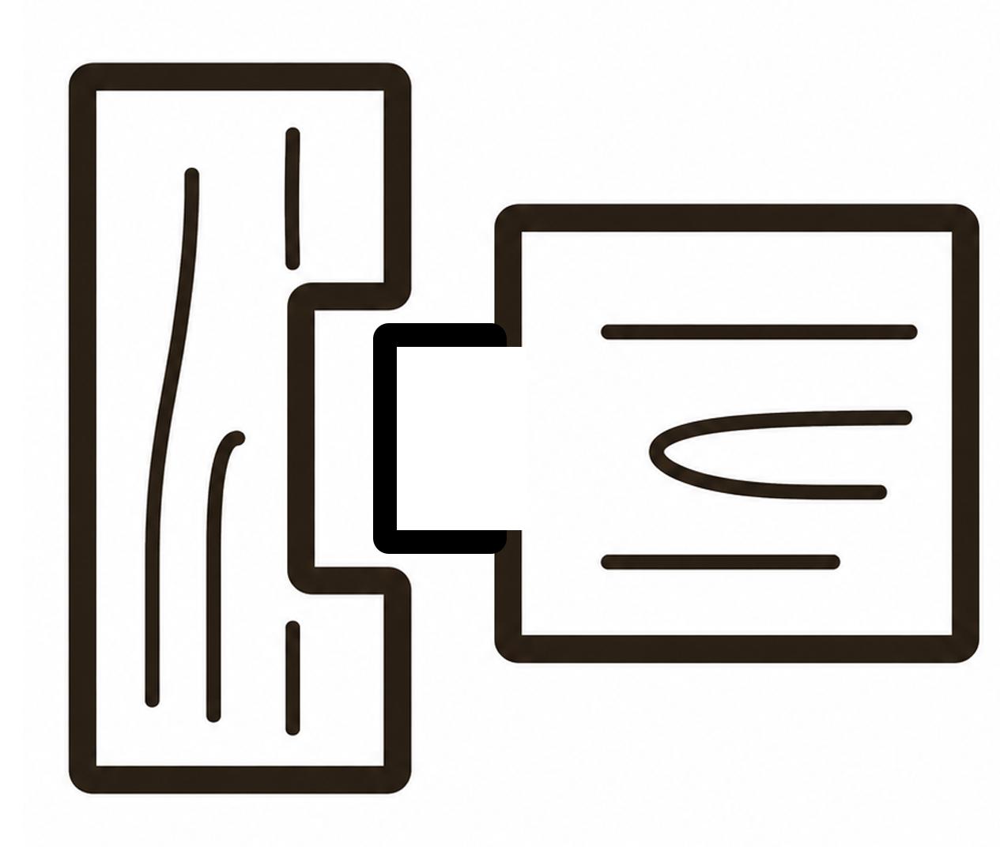
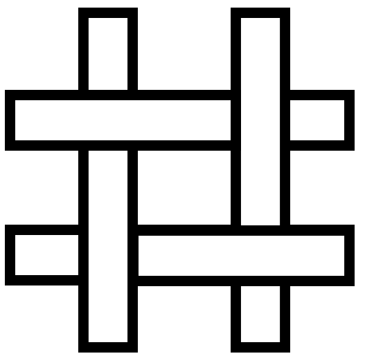
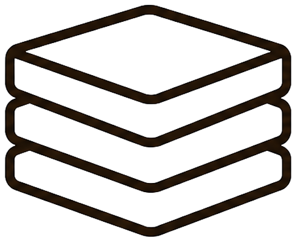

Negro raíz
#050505Paneles, texto y acciones principales.
Colores, tipografías y componentes reales utilizados en la experiencia digital de Raíz.
↓#050505Paneles, texto y acciones principales.
#FFFFFFFondos y contraste.
#F8F4F0Cards y superficies suaves.
#B92D26Estados activos y acentos.
#F8CBE0Topics, cursos y precios.
#93BBF5Contenido técnico.
#F7E98BCurso y energía.
#789171Materia e historia.
#411612Madera y fondos visuales.
Títulos, nombres, precios y mensajes de alto impacto.
ABCDEFGHIJKLMNÑOPQRSTUVWXYZ · 0123456789Textos, labels, navegación, formularios y componentes UI.
ABCDEFGHIJKLMNÑOPQRSTUVWXYZ · 0123456789Hero · Cal Sans 500Devolverlas a sus raíces
Section · Cal Sans 500Diseño recuperado
Card · Cal Sans 500Reparación estructural
Body · Plus Jakarta Sans 500Restauramos muebles de diseño respetando su historia y materialidad.
Label · Plus Jakarta Sans 800Material · madera recuperada
Observación inicial, registro del estado y criterios para decidir cómo avanzar.
 Modalidad
Modalidad Clases
Clases Horario
Horario Cupos
Cupos
Encastre
Tensado
Modelado Material
Material.course-card
Materiales, estructura, daños y criterios de intervención.
$55.000.course-topics articleReconocimiento de maderas, metales, tapizados y acabados.
.project-card
Recuperamos la superficie de madera y respetamos la línea original de la pieza.
Madera · Pulido · Terminación natural.mueble-tile

.timeline-panelDiseñada para envolver el cuerpo y generar una sensación de refugio, transformó el sillón tradicional en una pieza escultórica.
Ver más detalles
Inspirada en la estética espacial de los años sesenta, convirtió un asiento en una cápsula personal.
Ver más detalles
Una pieza expresiva de formas orgánicas que convirtió al diseño en un medio para comunicar emociones.
Ver más detalles
Su forma continua expandió los límites entre objeto funcional y pieza visual.
Ver más detalles
Una trama manual de cuerda transformó un material cotidiano en una pieza de diseño.
Ver más detalles
.course-price-cardClases teórico-prácticas
Guías, fichas y recursos de consulta
Constancia digital de asistencia y participación
.testimonial-slide“”La silla conservó su historia, pero volvió a sentirse actual. El trabajo fue delicado y muy cuidado.
.teacher-hover-card 01
01
Tapicería
Tapicería, diseño industrial y técnicas de restauración aplicada..course-factsClases virtuales
4 encuentros
Lunes 18–21 hs
Máx. 10 personas